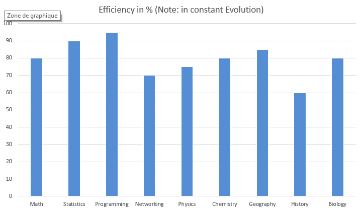
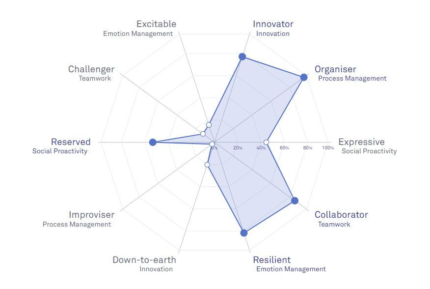
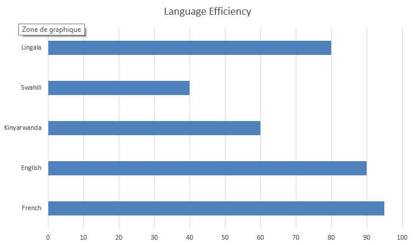
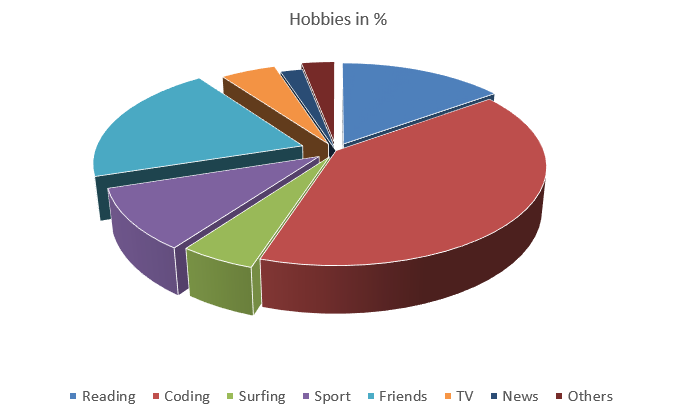

Holder of a master degree in Computer Application, a bachelor's degree in Applied Mathematics and a secondary diploma in Chemistry-Biology. He has strong competence in programming
data analysis, statistics and Mathematics.
"If i can describe the profile of that student, i can say that he is: Highly competent, hard worker, good attitude and discipline, mature and a self-motivated person with integrity. Also analytical,
decisive, results oriented, innovative and an effective team player and manager."
Dr. Minani Froduald, National University
Education Background
| Year |
Accomplishment |
| 2017 |
Master Degree in Computer Application (MCA) |
| 2010 |
Bachelor’s degree in Applied Mathematics delivered at the National University of Rwanda |
| 2006 |
Certificate of English delivered at the National University of Rwanda |
| 2005 |
Diploma of secondary school in Chemistry-Biology delivered at CS Meriba |
| 1999 |
Diploma of Primary school |
Trainings & Capacity Building
| Period |
Institution |
Course/Topic |
| August 2019 |
DataCamp |
Data Science (1 Year Program) |
| May 2019 |
EPRN |
Advanced SPSS Training for Data Analysis |
| March 2019 |
EPRN |
E-Views for Data Analysis in Economics |
| January 2019 |
ANDELA |
Andela Software Developer Bootcamp |
| July 2018 |
EDC |
Monitoring and Evaluation Concepts training |
| March 2017 |
Parul University |
Code Bravo Applfiest |
Knowledge and Efficiency Level

| > Statistics |
| Data analysis, Special question of statistics, inferential statistics, Multivariate analysis, stochastic processes, Forecasting methods and Time series, Fuzzy data. |
| > Mathematics |
| Algebra, Mathematical analysis, Geometry, optimal control, operational research, differential equations, physics. |
| > ICT/Programming Skills |
| Networking, Decision support system, Algorithmic and Pseudo codes, Artificial intelligence, ERP, MIS, MS Office, Database management, Scientific word, FORTRAN program, Mat lab, Java programming, C&C++ programming, Android programming, HTML, PHP, CSS, JSP, JavaScript, SQL, AJAX, Bootstrap, Objective-c, JQuery, Python. |
| > Others |
| Geography, History, Chemistry, Biology, Astronomy and Physics. |
"If i can describe the profile of that student, i can say that he is: Highly competent, hard worker, good attitude and discipline, mature and a self-motivated person with integrity. Also analytical,
decisive, results oriented, innovative and an effective team player and manager."
Dr. Minani Froduald, National University
Bobo has more than 5 years of experiences built in many fields: From volontary (non-paid) works to paid jobs and self-enterpreneurship.
Self-driven, motivated, good team-work player and strong adaptability, he always merges as an important asset wherever he goes. His
christian background education has given him the need to care about others as himself, thus a lot of experience in humanitarian jobs
(particularly non-paid) and he likes it.
Career Details
M&E Database Assistant
Education Development Center
From February 2019 to Now
Kigali, Rwanda
Job
Show Details
- Improving the effectiveness of the database tools and services
- Ensuring all the data complies with legal regulations
- Making sure the information is protected and backed-up
- Monitoring database performance
- Building new databases
- Monitoring data entry procedures
- Establishing the needs of users and monitoring user access and security;
- Exercises independent judgment and discretion in overall project management by prioritizing, planning and tracking project progress.
- Designs, develops and modifies programs, including prototypes.
- Researches product development options and provides analysis for product direction.
- Creates related documentation.
Database And Developer
YouMotion Ltd
From December 2016 to October 2018
Kigali, Rwanda
Job
Show Details
- Improving the effectiveness of the database tools and services
- Ensuring all the data complies with legal regulations
- Making sure the information is protected and backed-up
- Monitoring database performance
- Building new databases
- Monitoring data entry procedures
- Establishing the needs of users and monitoring user access and security;
- Exercises independent judgment and discretion in overall project management by prioritizing, planning and tracking project progress.
- Designs, develops and modifies programs, including prototypes.
- Researches product development options and provides analysis for product direction.
- Creates related documentation.
Monitoring & Evaluation Support
Education Development Center
From February 2018 to October 2018
Kigali, Rwanda
Job
Show Details
- Collecting ongoing project monitoring data from all sites.
- Inputting project monitoring data into database developed and maintain the database updated
- Supporting data analysis and preparation of Performance Reports
- Producing monthly summaries of monitoring data for presentation to Programme Manager.
- Producing ad hoc monitoring reports as requested by Programme Manager.
- Support Programme Manager with mid-term and final evaluation data requirements.
Data Entry Clerk
Education Development Center
January 2018
Kigali, Rwanda
Job
Show Details
- Prepares source data for computer entry by compiling and sorting information; establishing entry priorities.
- Processes source documents by reviewing data for deficiencies; resolving discrepancies by using standard procedures or returning incomplete documents to the team leader for resolution.
- Enters data by inputting alphabetic and numeric information according to screen format.
- Maintains data entry requirements by following data program techniques and procedures.
- Verifies entered data by reviewing, correcting, deleting, or reentering data; combining data from both systems when information is incomplete; purging files to eliminate duplication of data.
- Tests system changes and upgrades by inputting new data; reviewing output.
- Secures information by completing data base backups.
- Maintains operations by following policies and procedures; reporting needed changes.
- Contributes to team effort by accomplishing related results as needed.
Web Developer (Front & Back-End)
S.M SONI INFOSOFT
From November 2016 to May 2017
Vadodara, Gujarat, India
Internship
Show Details
- Improving the effectiveness of the database tools and services
- Ensuring all the data complies with legal regulations
- Making sure the information is protected and backed-up
- Monitoring database performance
- Building new databases
- Monitoring data entry procedures
- Establishing the needs of users and monitoring user access and security;
- Exercises independent judgment and discretion in overall project management by prioritizing, planning and tracking project progress.
- Designs, develops and modifies programs, including prototypes.
- Researches product development options and provides analysis for product direction.
- Creates related documentation.
Librarian and Logistics
Voice of God Recording
From February 2011 to May 2014
Kigali, Rwanda
Job
Show Details
- Develop logistics along with support plans, budget requirements and deployment timelines for new operations.
- Develop logistical plans for current operations and logistics contingency plans.
- Prepare plans for liquidation and downsizing.
- Develop and execute tools and methodologies to enable effective implementation of logistic plans.
- Design and develop standard operating methods to manage logistics operations efficiently.
- Electing, cataloguing and classifying library resources.
- Ensuring that library services meet the needs of particular groups of users.
- Making improvements to accessibility of library resources.
Statistician and Advisor
Youth League For Peace
From 2008 to 2012
Kigali, Rwanda
Job
Show Details
- Designing data acquisition trials.
- Assessing results.
- Analysing trends.
- Applying statistical methodology to complex data.
- Acting in a consultancy capacity.
- Designing and implementing data gathering/management computer systems and software.
- Using statistics to make forecasts and to provide projected figures.
- Presenting information in a variety of formats.
- Conveying complex information to people who may not be specialists.
- Interpreting the data and making sure that the right decisions are made based on the results.
- Monitoring data collected throughout its shelf-life.
Recent Saberr Test

Languages

Hobbies

Knowledge
Gallery